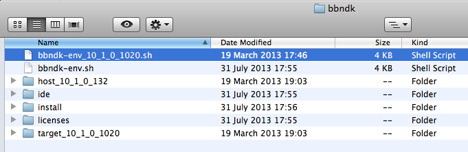
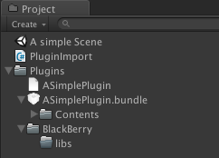
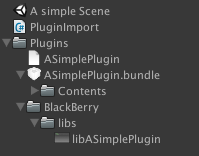

Plugins for Blackberry 10
Basic steps
Download the Desktop plugin example called 'Simplest Plugin' which you can get from here: SimplestPluginExample-4.0.zip
Unzip the SimplestPluginExample and place the unzipped project somewhere accessible on your hard drive.
Then Download the BlackBerry native SDK and install it by following the on screen prompts,you can find the appropriate version here: http://developer.blackberry.com/native/downloads/
Once you have the SDK installed then you need to locate the file
bbndk-env_10_2_0_1155.shfile (or .bat file for windows), this file might have different numbers at the end but that's not a problem.
In order to set up the paths needed to build BlackBerry object and shared libraries open a terminal window and navigate to the folder which contains this file. Type the command:
source bbndk-env_10_2_0_1155.sh(correct the file numbers where necessary).This will set up the paths needed to build BlackBerry object and shared libraries.
<pre><code> <b>Applications unity$</b> cd bbndk/ <b>bbndk unity$</b> ls bbndk-env.sh install bbndk-env_10_1_0_1020.sh licenses host_10_1_0_132 target_10_1_0_1020 ide <b>bbndk unity$</b> source bbndk-env_10_1_0_1020.sh </code></pre>Open the “Unity Project Plugin” (the project we unzipped earlier) within Unity and create the following directory path within the project panel:
Assets/Plugins/BlackBerry/libs.
Within a terminal window, navigate to the 'EclipsePlugin' directory within SimplestPluginExample, in this directory there should only be Plugin.cpp
SimplestPluginExample unity$ cd EclipsePlugin/ EclipsePlugin unity$ ls Plugin.cppProvided you have followed the steps correctly, typing the command:
which arm-arm-unknown-nto-qnx8.0.0eabi-g++, shouldn't produce any errors otherwise check you have set the paths up correctly.To create the object file, perform the following command within this terminal directory:
arm-unknown-nto-qnx8.0.0eabi-g++ -fPIC -marm -shared -c Plugin.cppYou should now see the Plugin.o file within EclipsePlugin:
SimplestPluginExample unity$ cd EclipsePlugin/ EclipsePlugin unity$ ls Plugin.cpp Plugin.oN.B. It is important that the filename matches the name used in the dll import line from the C# script, which in this case is 'ASimplePlugin'.
To create the shared library that the project uses, perform the following command:
arm-unknown-nto-qnx8.0.0eabi-g++ -shared -o libASimplePlugin.so Plugin.oYou should now see the libASimplePlugin.so file within EclipsePlugin:
SimplestPluginExample unity$ cd EclipsePlugin/ EclipsePlugin unity$ ls Plugin.cpp Plugin.o libASimplePlugin.soCopy and paste the generated libASimplePlugin.so file into our earlier created directory
SimplestPluginExample/Unity Project Plugin/Assets/Plugins/BlackBerry/libs, you can also drag the file directly into the Unity editor.
Deploy the project to your BlackBerry device (provided the build and player settings have been setup) and then check the log (you can do this by accessing Player Settings and clicking 'Get Log'). It should have print statements from the C# file in the project.